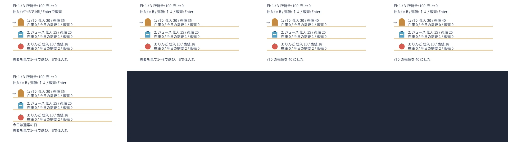
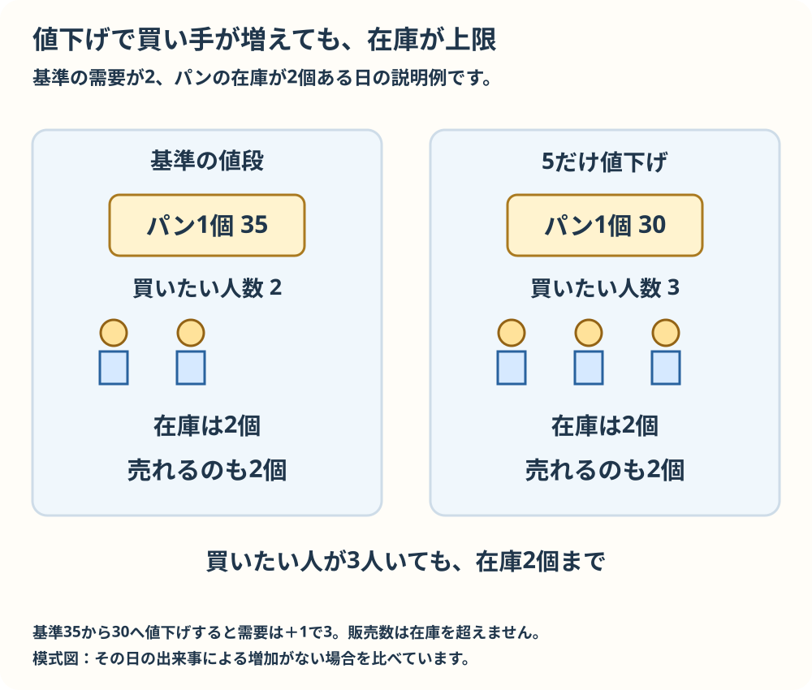

小さなお店の経営ゲームの発展
基本の完成版から3つの機能を順番に追加します。
始める前に
基本編の完成版から始めます。ZIPを展開してできたフォルダーでindex.htmlを開きます。ZIPには基本編の3ファイルが入っています。
WindowsでZIPを展開する（動画）
自分で作った基本版でも同じ内容なら使えます。
各段階の変更を上から順に作業用の script.js に加えます。変更前と同じ範囲を探して、変更後のコードに置き換えてください。保存したら index.html を開くか、再読み込みします。
ステップ 1：売値を調整する
このステップの見本を図で見る

このステップの見本
{name: "パン", cost: 20, price: 35, stock: 0, soldToday: 0},
変わったコードの一例（script.js）{name: "パン", basePrice: 35, cost: 20, price: 35, stock: 0, soldToday: 0},
見本で確かめること
パンを選んで上キーを押すと売値40、下キーを2回押すと30になります。
目標
選んだ商品の売値を上下キーで変えます。
確認欄までは準備中です。作業を順に進め、確認欄で保存して動作を確かめます。
書く場所と置き換えるコード
基準の売値を覚える
作業用フォルダーの script.js で、次の範囲を探して置き換えます。
置き換える範囲
{name: "パン", cost: 20, price: 35, stock: 0, soldToday: 0},
{name: "ジュース", cost: 15, price: 25, stock: 0, soldToday: 0},
{name: "りんご", cost: 10, price: 18, stock: 0, soldToday: 0}
置き換えるコード
{name: "パン", basePrice: 35, cost: 20, price: 35, stock: 0, soldToday: 0},
{name: "ジュース", basePrice: 25, cost: 15, price: 25, stock: 0, soldToday: 0},
{name: "りんご", basePrice: 18, cost: 10, price: 18, stock: 0, soldToday: 0}
各商品の basePrice に元の売値を残します。
売値の操作を案内する
作業用フォルダーの script.js で、次の範囲を探して置き換えます。
置き換える範囲
ctx.fillText("仕入れ中: Bで1個 / Enterで販売", 80, 82);
置き換えるコード
ctx.fillText("仕入れ: B / 売値: ↑↓ / 販売: Enter", 80, 82);
上・下キーで売値を変える操作を表示します。
矢印キーで売値を変える
作業用フォルダーの script.js で、次の目印を探し、その直後に書きます。
目印
message = products[selected].name + "を選んだ";
書き足すコード
} else if ((event.key === "ArrowUp" || event.key === "ArrowDown") && phase === "buy") {
event.preventDefault();
const item = products[selected];
const change = event.key === "ArrowUp" ? 5 : -5;
item.price = Math.max(item.basePrice - 5, Math.min(item.basePrice + 5, item.price + change));
message = item.name + "の売値を " + item.price + " にした";
上なら5増やし、下なら5減らします。Math.max() と Math.min() で基準価格の前後5に収めます。
保存後の確かめ方
保存してゲーム画面を更新する（動画）
index.html を再読み込みします。パンを選んで上キーを押すと売値40、下キーを2回押すと30になります。 この段階の見本を開く
小さな練習
売値を変え、同じ個数が売れたときの所持金を比べます。 練習後はコードを元に戻してください。
ステップ 2：値段で需要を変える
このステップの見本を図で見る
このステップの見本
ctx.fillText("在庫 " + item.stock + " / 今日の需要 " + item.demand + " / 販売 " + item.soldToday, 170, y + 45);
変わったコードの一例（script.js）ctx.fillText("在庫 " + item.stock + " / 今日の需要 " + effectiveDemand(item) + " / 販売 " + item.soldToday, 170, y + 45);
見本で確かめること
上下キーで売値を変えると需要が変わります。
目標
売値が安いと欲しい人が増え、高いと減ります。
確認欄までは準備中です。作業を順に進め、確認欄で保存して動作を確かめます。
書く場所と置き換えるコード
価格を反映した需要を用意する
作業用フォルダーの script.js で、次の目印を探し、その直前に書きます。
目印
function sellToday()書き足すコード
function effectiveDemand(item) {
let demand = item.demand;
if (item.price < item.basePrice) demand++;
if (item.price > item.basePrice) demand--;
return Math.max(0, demand);
}
effectiveDemand() は基準より安ければ需要を1増やし、高ければ1減らします。Math.max(0, demand) で0未満にしません。

基準の需要が2で、パンの在庫が2個ある日を考えます。売値35を30へ下げると、買いたい人数は1増えて3になります。それでも、在庫は2個なので売れるのは2個までです。値段だけでなく、需要と在庫の両方を見て販売数を決めます。
その日の出来事による需要増加がない説明例です。人の絵で需要2人と3人を示し、売れる数は各欄に直接記載しています。
価格を反映した需要を表示する
作業用フォルダーの script.js で、次の範囲を探して置き換えます。
置き換える範囲
ctx.fillText("在庫 " + item.stock + " / 今日の需要 " + item.demand + " / 販売 " + item.soldToday, 170, y + 45);
置き換えるコード
ctx.fillText("在庫 " + item.stock + " / 今日の需要 " + effectiveDemand(item) + " / 販売 " + item.soldToday, 170, y + 45);
画面の需要も effectiveDemand() の結果を使います。
価格を反映した需要で売る
作業用フォルダーの script.js で、次の範囲を探して置き換えます。
置き換える範囲
const sold = Math.min(item.stock, item.demand);
置き換えるコード
const sold = Math.min(item.stock, effectiveDemand(item));
販売数は在庫と変更後の需要の小さい方です。
保存後の確かめ方
上下キーで売値を変えると需要が変わります。在庫より多く売れないことも確かめます。 この段階の見本を開く
小さな練習
価格の変更による需要の増減を2に変えて比べます。 練習後はコードを元に戻してください。
ステップ 3：日ごとの出来事を加える
このステップの見本を図で見る
パン2、ジュース2
通常の日は追加なし
パン：2 + 1 = 3
パンの需要だけ1増える
ジュース：2 + 1 = 3
ジュースの需要だけ1増える。基本需要は毎日抽選
ゲーム画面とコードの前後を見る
このステップの見本
この行を足す前 変わったコードの一例（script.js）
if (day === 2) eventText = "今日はパンの需要が1増える日";
見本で確かめること
2日目はパン、3日目はジュースの需要が増えると表示されます。
目標
日ごとに違う需要を見て、仕入れるものを考えます。
確認欄までは準備中です。作業を順に進め、確認欄で保存して動作を確かめます。
書く場所と置き換えるコード
日ごとの出来事を表示する
作業用フォルダーの script.js で、次の目印を探し、その直後に書きます。
目印
ctx.fillText("在庫 " + item.stock + " / 今日の需要 " + effectiveDemand(item) + " / 販売 " + item.soldToday, 170, y + 45);
}
書き足すコード
let eventText = "今日は通常の日";
if (day === 2) eventText = "今日はパンの需要が1増える日";
if (day === 3) eventText = "今日はジュースの需要が1増える日";
ctx.fillText(eventText, 80, 350);
2日目はパン、3日目はジュースの需要が1増えることを案内します。
出来事で需要を増やす
作業用フォルダーの script.js で、次の目印を探し、その直後に書きます。
目印
item.soldToday = 0;
}
書き足すコード
if (day === 2) products[0].demand++;
if (day === 3) products[1].demand++;
2日目は商品0、3日目は商品1の需要を1増やします。
保存後の確かめ方
2日目はパン、3日目はジュースの需要が増えると表示されます。所持金160以上を目指して3日間遊びます。 この段階の見本を開く
小さな練習
需要が増える商品を別の商品に変えて売れ方を比べます。 練習後はコードを元に戻してください。